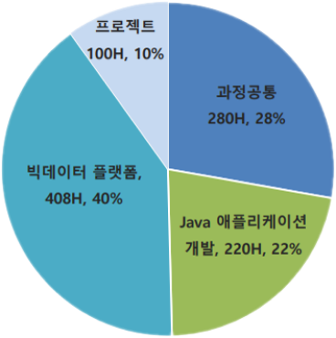
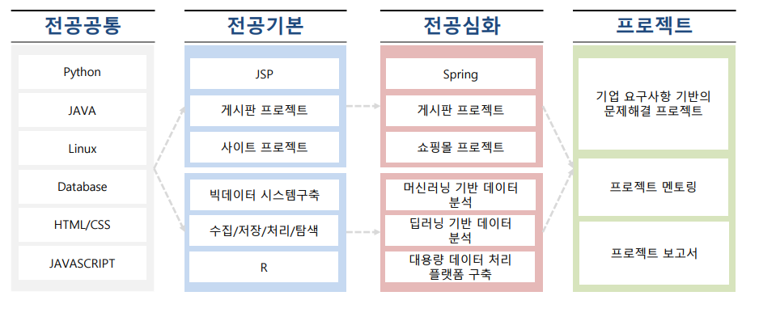
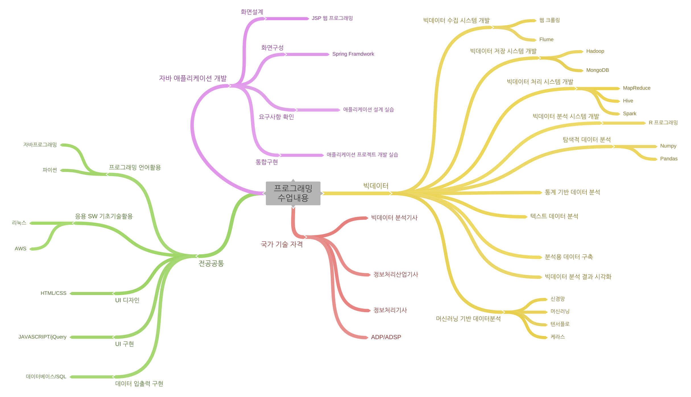
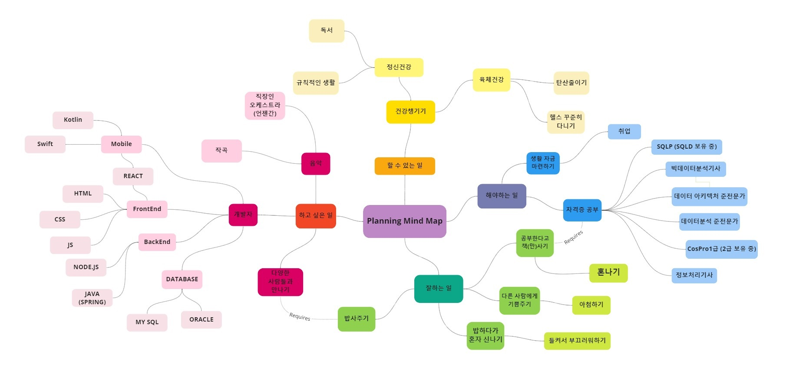

About me
Introduction
- 안녕하세요. 개발자가 되고픈 변진하입니다.
- 빅데이터 분석, Backend 에 관심을 갖고 있습니다.
- 음악을 좋아합니다. 취미로 프로듀싱을 하고 있습니다.
Skills
Backend
- Java
- Spring Boot, Spring MVC
DevOps
- AWS EC2
- MySQL, MariaDB
- Tomcat
Education
과정명 : 빅데이터 플랫폼 개발자 양성
교육일정 : 2021.06.15 ~ 2021.11.26
교육장소 : 부산 더조은직업훈련학교

과정공통(280H)
Java 애플리션개발(220H)
빅데이터 플랫폼(408H)
프로젝트(100H)


Planning mind map

코딩공부
- 하루 10분 쿼리문 연습
- 하루 한 문제 풀기
- 알고리즘 공부
- JAVA, Python 언어 숙달
건강
- 정신건강 : 독서, 규칙적인 생활
- 신체건강 : 헬스 꾸준히 다니기, 식습관 고치기
개인적으로 하고싶은 일
- 여행
- 코틀린, 하둡 공부
- 자격증따기 : ADSP, 빅분기, 정처기
- 직장인 Orchestra 가입